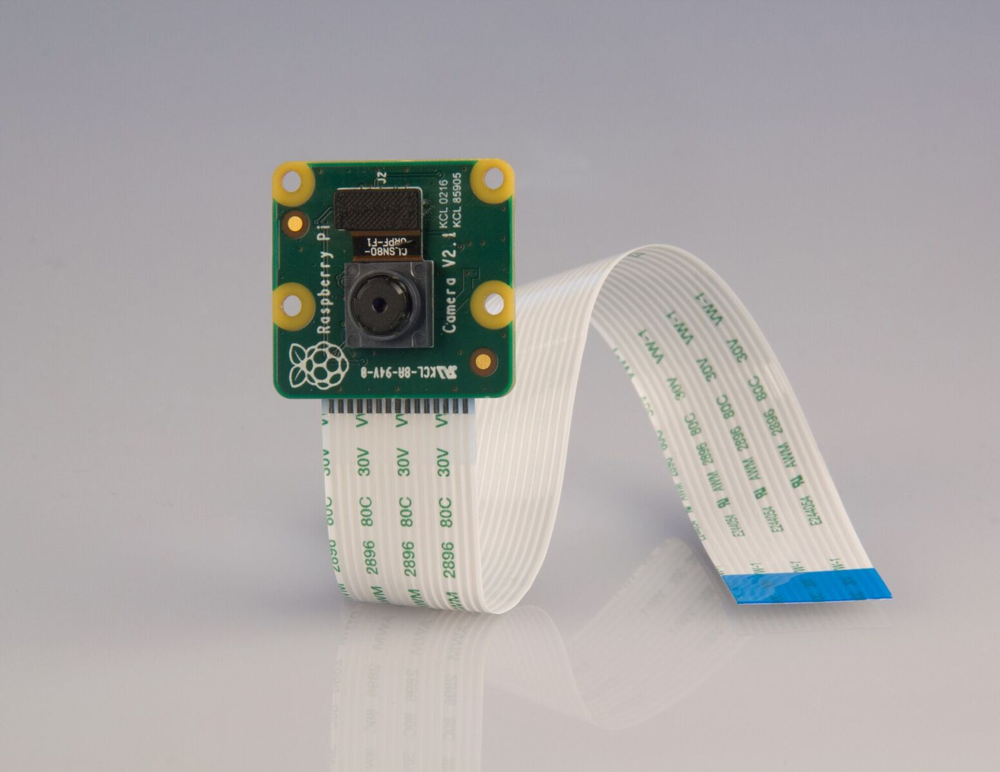
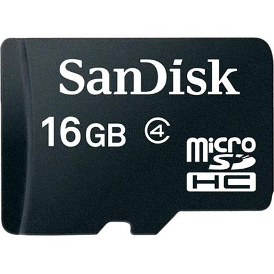
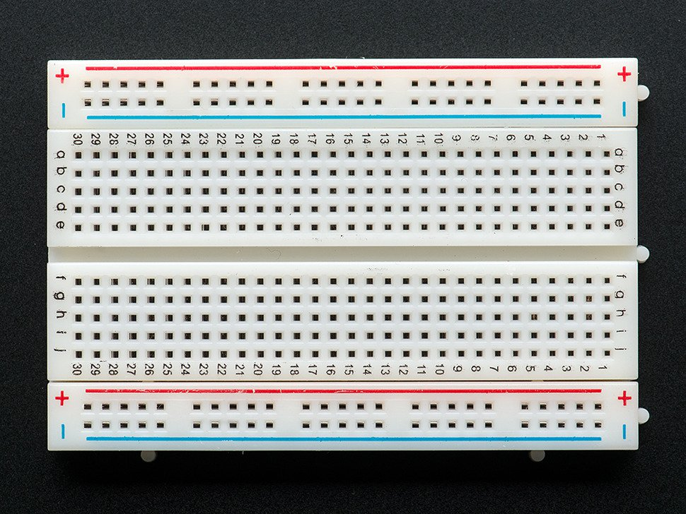

Tutorial for Push Button Raspberry Pi Spy Cam
What You'll Need
- 1 Raspberry Pi 3 - Model B

- 1 Raspberry Camera - V 2.1

- 1 microSD Card - 16gb is prefered

- 1 Breadboard

- 1 Tactile Switch Button

- 1 Battery Holder with batteries(for making it mobile)

- 1 Mini HDMI charger

- Soldering Kit

- Wires